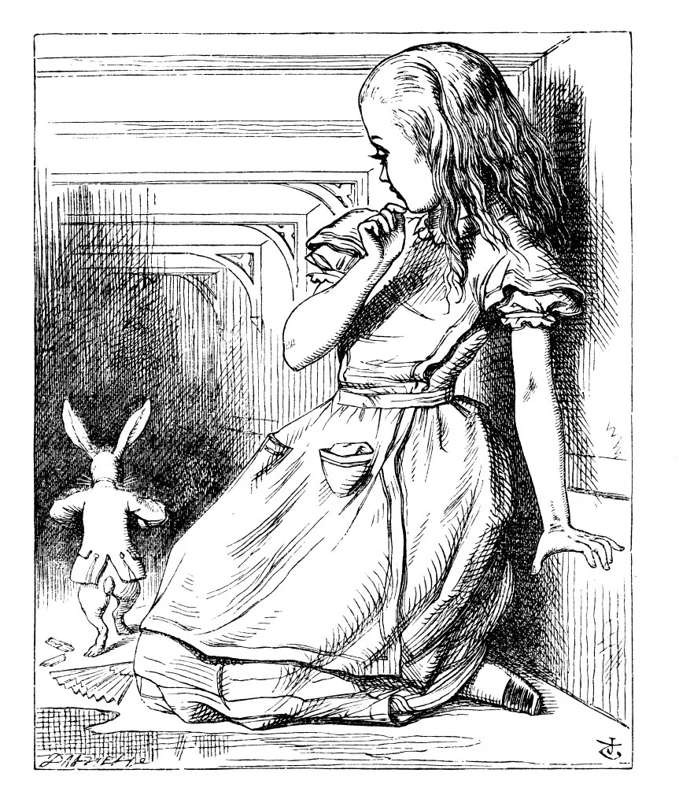
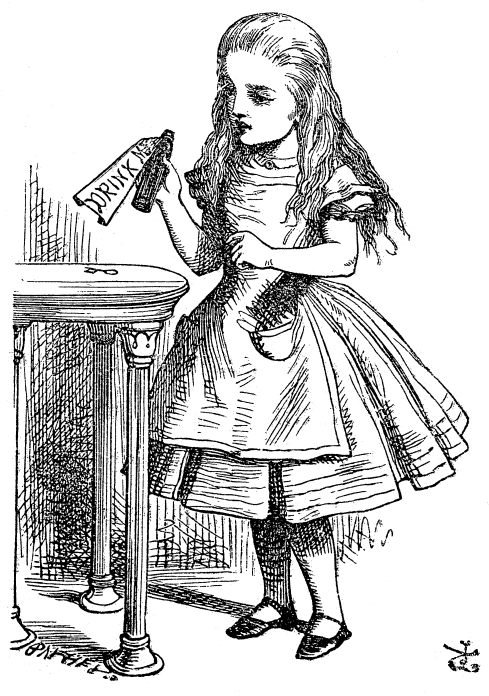
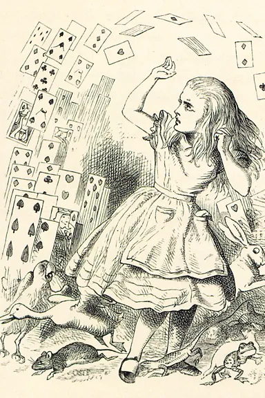

Top
Research
My interest in algebraic geometry is typically categorical / cohomological / homotopic and those of deformation,
I’d like to develop problems in Fukaya category, moduli problems, quotient stack, or any others.
Here is a list of research proposals:

-
•
On Homological Mirror Symmetry
For Proving HMS 1: Hochschild deformation of Fukaya category or Stable , which induces derived formal geometry, 2: Comparing Fukaya category with , whose Tannakian duality is . [link]
-
•
Derived Intersection on Foliation
For Proving HMS 3: If all symplectic are somewhat cotangent, Nadler-Zaslow might be generalized to any Fukaya category. [link]
Exposition
This is a list of expositions previously shown to other people or intended to be distributed in the future.

-
•
(Fall 2026) On Symplectic Calculus
Intersection, Nijenhuis, sheaf quantization, cone, singularity, topology etc. [link] -
•
(Fall 2026) Note on Triangulated Category
Perverse sheaf, suspension/cylinder triangulation, dg-enhancement, stable-, stable homotopy, and their geometric realization. [link] -
•
(Fall 2026) What is Math?
I’ll organize the overview of pure math reseach pov of just finishing calculus and linear algebra or abstract algebra. I describe the evolution process of how the high school math jump into the research math based on my biography. [link] -
•
(Fall 2022) Cheat Cheet Mirror Symmetry
Marc Gross’s tropical/toric geometry and quantum cohomology for mirror symmetry. It’s for exam for PhD Candidate. [link] -
•
(Fall 2022), Intro to Geometric Satake Correspondence
Grand relationship among AG, RT, and NT. [link] -
•
(Winter 2019) Brown Representability
Introducing Brown representability in triangulated category. It’s bachelor’s thesis. [link]
Casual Non-Research Interests
Below is the list of materials I personally think interesting, and they are somewhat connecting to algebraic geometry. They are quite different from my focus, however.
-
•
AdS/CFT
AdS/CFT claims AdS conformal boundary corresponds to CFT, called holography. AdS/CFT induces Ryu-Takayanagi’s quantum-entanglement, CFT generates a variety of non-linear PDE including relativistic Navier-Stokes equation, and Sasaki-Einstein models AdS space. -
•
Spin(7) Geometry and M-theory
M-theory is a generalization of superstring theories, while simplifies perturbation effect. M-theory consists of holonomy in -dimensional space. Joyce conjecture claims an extraction of symplectic structure from . -
•
Geometric Langlands
Geometric Langlands bridges local system, D-module, and Higgs bundle, and this is not number theory. 4d CFT derives Higgs bundle through Kapustin-Witten, whose S-duality is D-module. -
•
Vertex Operator Algebra
There are many application in physics and other area of math.
Junk
Two junk pdf of totally 200 pages based on rabbit holing ChatGPT or wikipedia for a period of time. Muscle doesn’t betray us.
